Arial
Arial
Verdana
Times New Roman
14
12
14
16
18
20
¡Bienvenido al Buscador de Versículos Bíblicos!
Escribe el libro, capítulo y versículo que deseas buscar.
"heb 1" o palabras de busqueda "israel")